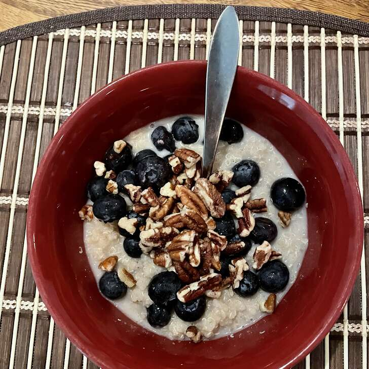

Quinoa Porridge

A Good nutritius breakfast "Quinoa Porridge"
Looking for ideas for the quinoa you picked up at Trader Joe's? Here's a dairy and wheat free breakfast porridge thick, rich and delish for those cold mornings in the Andes. Those with nut allergies may wish to substitute soymilk or regular cow's milk for the almond. Adjust sugar to your taste or substitute with agave syrup or black strap molasses (use half as much). This recipe can easily be doubled.
Ingredients
- ½ cup quinoa
- ¼ teaspoon ground cinnamon
- 1 ½ cups almond milk
- ½ cup water
- 2 tablespoons brown sugar
- 1 teaspoon vanilla extract (Optional)
- 1 pinch salt
Steps
- Heat a saucepan over medium heat and measure in the quinoa.
- Season with cinnamon and cook until toasted, stirring frequently, about 3 minutes.
- Pour in the almond milk, water and vanilla and stir in the brown sugar and salt.
- Bring to a boil, then cook over low heat until the porridge is thick and grains are tender, about 25 minutes.
- Add more water if needed if the liquid has dried up before it finishes cooking.
-
- Stir occasionally, especially at the end, to prevent burning.